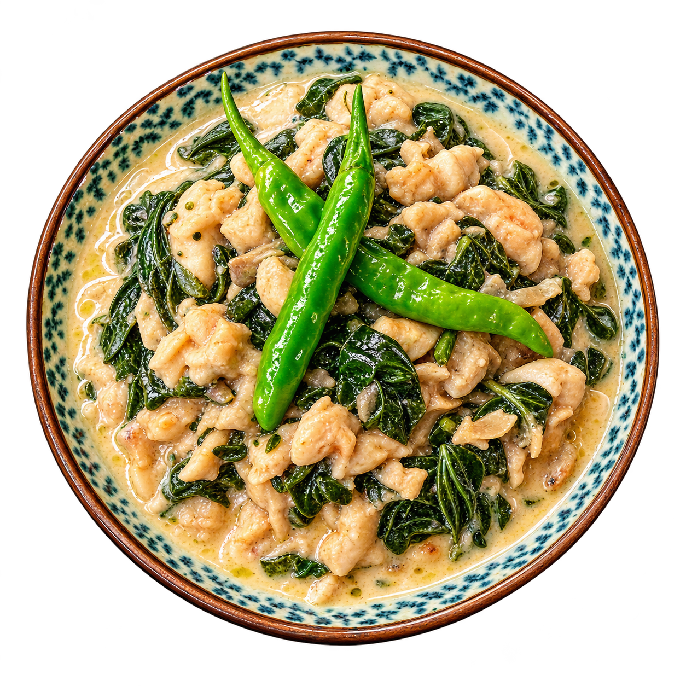
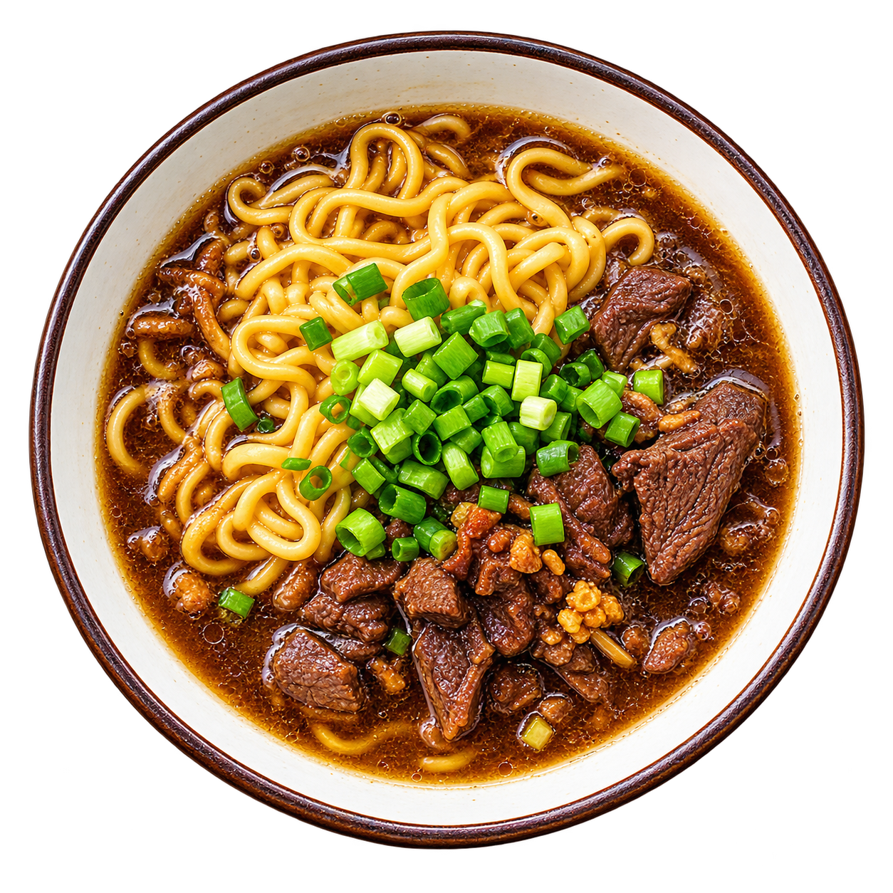
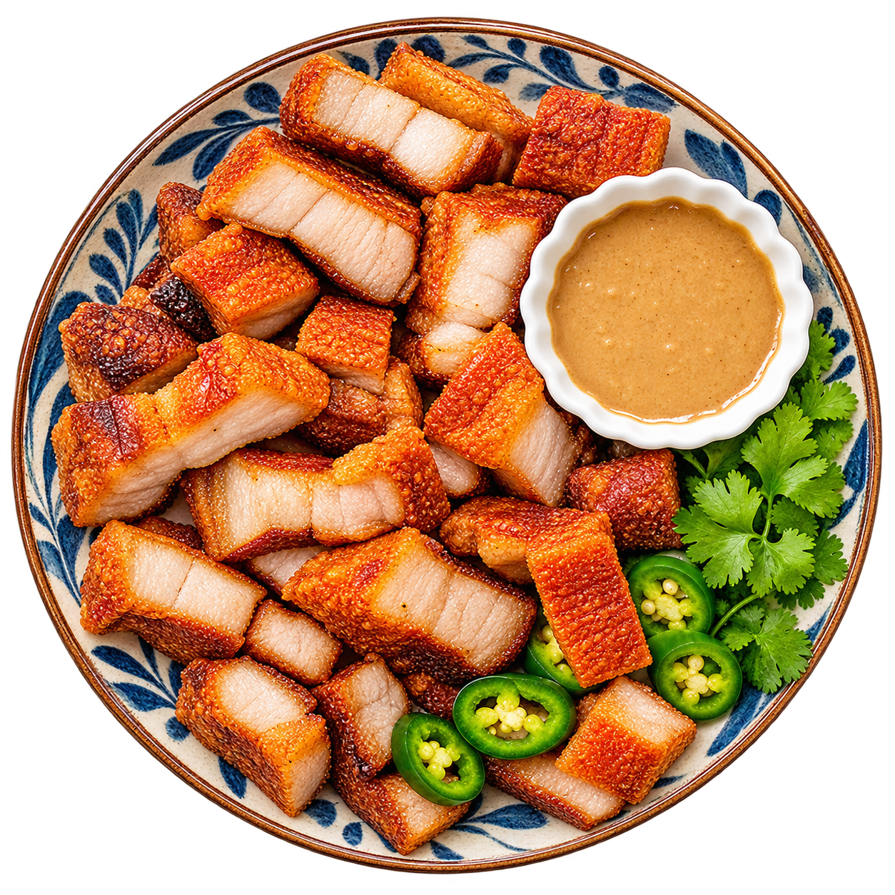

Discover the Philippines, One Bite at a Time.
Explore Filipino dishes, regional specialties, and the stories behind every flavor.

Bicol Specialties
These regional attributions are based on general knowledge and are not formally cited.
-

CAMARINES SUR, BICOL
Kinunot
A traditional Bicolano dish made with shredded stingray or shark meat cooked in coconut milk.
Read about Kinunot -

CAMALIG, ALBAY
Pinangat
Taro leaves filled with a savory coconut mixture, wrapped and slowly cooked until tender.
Read about Pinangat -

NAGA CITY, CAMARINES SUR
Kinalas
A hearty noodle soup featuring tender meat, rich broth, and a distinctive savory sauce.
Read about Kinalas
Filipino Dishes to Explore
Get to know three dishes and the flavors behind them.
-
FILIPINO CLASSIC
Chicken Adobo
Tender chicken simmered in soy sauce, vinegar, garlic, and aromatic spices.
Read about Chicken Adobo -

COMFORT FOOD
Sinigang
A comforting sour soup filled with tender meat, vegetables, and a flavorful broth.
Read about Sinigang -

FESTIVE FAVORITE
Lechon
A whole roasted pig known for its crispy golden skin and flavorful meat.
Read about Lechon
From Around the Philippines
Explore food traditions across Luzon, Visayas, and Mindanao.
-
Luzon
NORTHERN PHILIPPINES
Discover rich culinary traditions, hearty specialties, and regional favorites from the country's largest island group.
Explore Luzon -
Visayas
CENTRAL PHILIPPINES
Experience a variety of island flavors, beloved local delicacies, and distinctive cooking traditions.
Explore Visayas -
Mindanao
SOUTHERN PHILIPPINES
Explore diverse culinary influences, traditional dishes, and flavors shaped by its many communities.
Explore Mindanao

FILIPINO FOOD FACT
The Meaning Behind Halo-Halo
The name "Halo-Halo" literally means "mix-mix" in Filipino. It comes from the way its ingredients are combined before eating, bringing together different textures and flavors in one refreshing dessert.
A little mix of everything!
SAMPLE
Albay Sample Area
Near Me doesn't use your location yet. Albay is shown as a sample area, and no restaurants are listed or recommended.
No listings available. Restaurant names and details are left out until they can be backed by reliable sources.
Need an Idea for Your Next Meal?
Get a surprise Filipino dish, then browse more ideas.
Get a surprise dish